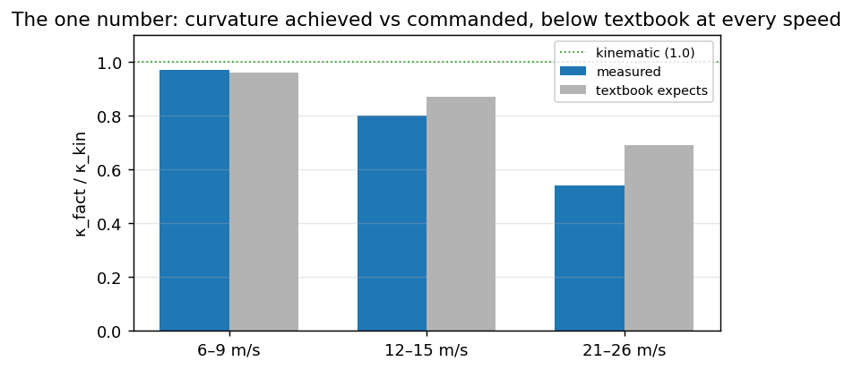

The lateral loop — planner, control, platform#
Longitudinal control sets speed, lateral control sets steering. This course is about lateral
control: on an MQB Golf without radar, longitudinal stays stock cruise and our HCA path is a supervised
lateral actuator (the longitudinal story — stock cruise buttons only — lives in git history;
docs/CONTROLLER_LIMITS.md has the curvature-ahead speed cap that remains).
The native code splits the lateral loop into three services, on purpose, and the book’s parts follow that split: Planner decides what shape to drive (a curvature plan), Control decides what command produces it (a torque), Platform puts that command on the bus and is the only place that knows the car is a Volkswagen. This part is the Planner; the two that follow are Control and Platform.
Longitudinal control is out of scope: on an MQB Golf without radar it stays stock cruise, and our HCA
path is a supervised lateral actuator (the stock-cruise-button story lives in git history;
docs/CONTROLLER_LIMITS.md has the curvature-ahead speed cap that remains).
The chapters build on each other — each exists because the previous one fails at something measurable, and the failure is the interesting part:
chapter |
part |
the idea |
where it breaks |
|---|---|---|---|
Planner |
\(\kappa = \tan\delta / L\) — pure geometry |
the tyres do not go exactly where they point: real curvature is 0.54 of geometric at 22 m/s |
|
Planner |
steer at one look-ahead point |
one point cannot represent a path whose curvature changes inside the look-ahead |
|
Planner |
fuse two lane lines and the model plan into one reference |
lines lie when they vanish; the plan cuts arcs; σ decides which you get |
|
Planner |
optimise a short future trajectory |
the horizon costs money, the plan has a bias, and on tight arcs the actuator saturates |
|
Control |
κ → δ through tyre slip and delay |
the slip coefficient varies with speed, 0.97 → 0.54 |
|
Control |
δ → torque against the rack |
friction eats P, the panda rate limiter winds the integrator, feedforward is single-digit cNm |
|
Platform |
torque → a legal HCA_01, if the panda allows |
counter, checksum secret, safety mode, ignition debounce |
What goes in, what comes out#
Inputs (after vision and chassis topics): a metric path polyline, speed \(v\), the actual steering wheel
angle, and timestamps. Output: a desired steering angle, which LatControlPID turns into a
normalised torque for HCA_01 → EPS.
|
role in the course |
|---|---|
|
geometric baseline — closest to the classical Pure Pursuit |
|
default on road — time domain, delay compensation, vehicle model |
A third, path-domain MPC (vp, VisionPilot) was the middle step between the two and was deleted on
2026-08-21 once fp had displaced it on the road; MPC and fp still builds its
seven-step mental model, because it is the clearest way to learn what any MPC does.
Why one number is worth carrying through the whole loop#
Everything in this part can be checked against a single measured quantity: the ratio of the curvature the car actually achieves to the curvature the geometry predicts. Steady arcs on this car give
speed |
\(\kappa_{\text{fact}} / \kappa_{\text{kin}}\) |
what the model expects |
|---|---|---|
6–9 m/s |
0.97 |
0.96 |
12–15 m/s |
0.80 |
0.87 |
21–26 m/s |
0.54 |
0.69 |
{kind=link}

Fig. 9 Curvature achieved vs commanded, by speed — measured below even the textbook expectation at every bin.#
Read the first row and the bicycle model is excellent. Read the last and it over-commands by a factor of
two. That single table is the reason the remaining three chapters exist, and the reason a constant
tire_stiffness_factor cannot be the final answer.
import math
L = 2.636 # wheelbase, m
STEER_RATIO = 15.7
MEASURED = {7.5: 0.97, 13.5: 0.80, 23.5: 0.54} # speed -> kappa_fact / kappa_kin
def kappa_kinematic(delta_rad):
"""Bicycle model: curvature from front wheel angle. No tyres, no speed."""
return math.tan(delta_rad) / L
def wheel_angle_for(kappa, v_ms, use_slip, stiffness_factor=0.64):
"""Command needed for a target curvature. `use_slip` adds the understeer term."""
if not use_slip:
return math.atan(kappa * L)
# Understeer gradient scaled by the stiffness factor: delta = atan(k*L) * (1 + K*v^2)
K = 0.0015 / max(stiffness_factor, 1e-3)
return math.atan(kappa * L) * (1.0 + K * v_ms * v_ms)
# A 200 m arc, driven at three speeds. What curvature do we actually get?
kappa_target = 1.0 / 200.0
print(f"{'speed':>7} {'command':>9} {'kinematic':>11} {'achieved':>10} {'error':>8}")
for v, ratio in MEASURED.items():
delta = wheel_angle_for(kappa_target, v, use_slip=False)
achieved = kappa_kinematic(delta) * ratio
err = (achieved - kappa_target) / kappa_target
print(f"{v:>5.1f} m/s {math.degrees(delta) * STEER_RATIO:>7.1f}° "
f"{kappa_kinematic(delta):>11.5f} {achieved:>10.5f} {100 * err:>+7.0f}%")
Run it: at 7.5 m/s the geometric command lands within a few percent, and at 23.5 m/s it delivers barely half the curvature asked for. On a 200 m arc that shortfall is what pushes the car to the outside of the turn — the exact symptom the Vehicle model chapter sets out to fix.
And what the compensation costs#
The obvious fix is to ask for more. It works, up to two limits that no coefficient moves: the configured steering clamp, and the actuator.
The arcs below are the ones actually driven on the measured runs, each at the speed it was driven at — inventing a 70 m radius at 22 m/s would be 6.9 m/s² of lateral acceleration, past the grip of a road tyre, and the number it produced would teach nothing.
MAX_STEER_DEG = 20.0 # vehicle.max_steer_deg, our own limit
def compensated_command(kappa, v_ms, stiffness_factor):
return wheel_angle_for(kappa, v_ms, use_slip=True, stiffness_factor=stiffness_factor)
# radius, speed: the arc episodes from runs 2026_08_04_21_00_18 and 2026_08_06_00_36_42
ARCS = ((231.0, 13.6), (150.0, 13.8), (134.0, 11.8), (123.0, 13.8), (71.0, 7.0))
print(f"{'radius':>8} {'speed':>7} {'a_lat':>7} {'tsf 0.64':>10} {'tsf 0.50':>10} {'clamped?':>9}")
for radius, v in ARCS:
kappa = 1.0 / radius
a_lat = kappa * v * v
swa = [math.degrees(compensated_command(kappa, v, f)) * STEER_RATIO for f in (0.64, 0.50)]
clamped = "yes" if max(swa) > MAX_STEER_DEG * STEER_RATIO else "no"
print(f"{radius:>6.0f} m {v:>5.1f} m/s {a_lat:>6.2f} {swa[0]:>9.1f}° {swa[1]:>9.1f}° {clamped:>9}")
Two readings of that output matter.
The compensation is small. Dropping tire_stiffness_factor from 0.64 to 0.50 asks for 3 to 9 % more
angle across these arcs — a degree or two of steering wheel, not tens. That is worth internalising before
touching the parameter: it is a trim, not a lever. And measured on the road it bought exactly what a trim
should — the left-arc tracking error moved from +0.29 m to +0.21 m.
Notice also that the clamp never fires. max_steer_deg is a road wheel limit, so 20° of it is over
300° of steering wheel, while the largest command any of these arcs asks for is 38°. What stops us is not
the clamp but torque. On the measured right arcs the wheel does
reach the commanded angle on the left (+13.8° asked, +13.5° achieved), but torque sat at the ±300 cNm HCA
ceiling in 65 % of right-arc frames. While torque is saturated there is no feedback at all: a larger
command changes nothing except the number in the log. That is why the plan for tight arcs is to request
less curvature, not to raise a gain — and it is the boundary where this whole part of the course ends and
perception work begins.
Reading order#
Bicycle model — \(\delta\), the instantaneous centre of rotation, \(\kappa = \tan\delta/L\).
Pure Pursuit — the one-step geometric law, and what the look-ahead hides.
Lane path — where the reference the controllers track actually comes from.
MPC and fp — horizon optimisation, cost weights, and the road defaults.
Then the Control part turns that plan into torque: Vehicle model (why kinematics lies above 15 m/s) and Angle control (the inner PID).
Tip
The one diagnostic rule worth memorising: bad vision rate or bad calibration is not a reason to raise CTE weights. A 1.5° calibration error is 0.52 m of lateral error at 20 m — three times the target — and no controller gain can see the difference between that and a real offset.
Quality target#
On healthy HCA windows, a median absolute lane offset of 0.10–0.15 m at \(v \approx 20\) m/s is comparable to a careful human on the same roads. Worth knowing precisely, because it sets when to stop: measured on the same arcs, a driver without any assistance holds 0.15–0.17 m, and our controller is already smoother than the human on straights (0.12 against 0.16). Zero is not the target; the human is.
Metre-scale deviation on that same segment means check vision rate, latency and calibration first, and controller parameters second.
Next: Kinematic bicycle model